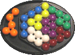
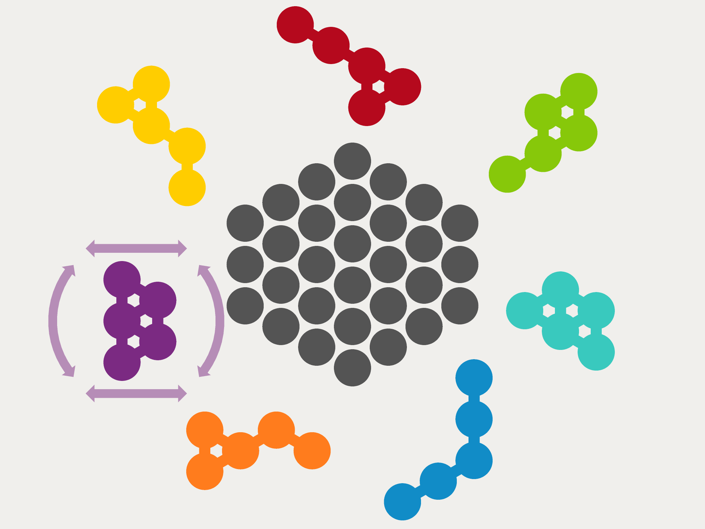

AtomPuzzle
The atompuzzle guarantees continuous fun by tinkering to find the different solutions.
The problem seems very easy. You must "only" fit six parts of the atompuzzle in a hexagon. And it has to fill out the hexagon completely.
Altogether the atompuzzle has got seven parts, with five different shapes (two at a time have the same shape). One part can not used and has to be put aside. Thus there exists five categories of solutions. The task is to find as much solutions as possible for every category.
For this Eric created a game "Molicula" for the iPhone und iPad:
Molicula on the App Store